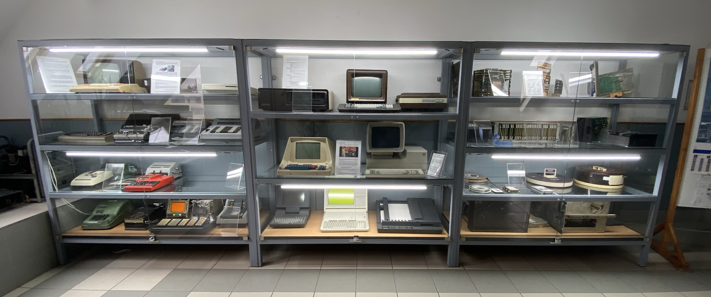

Dr. Salamon József Imre tanár úr gyűjteménye
Dr. Salamon József Imre tanár úr gyűjteménye található a Ceglédi SZC Közgazdasági és Informatikai
Technikum harmadik emeletén.

1984-től kezdte el gyűjteni tanár úr az eszközöket. Volt olyan, amit pénzért vett, de nagyját cégektől
kapta selejtkén.
Még ma is gyűjti ezeket az eszközöket.
Hely szűke miatt csak kisebb számítástechnikai eszközöket gyűjt már.
Néhány eszköz a Debreceni Kossuth Lajos Tudományegyetemről származik.
A gyűjtemény a számolástechnika fejlődési folyamatába nyújt bepillantást.
Az abakuszok, a Napier-rudak, a számolást könnyítő szorzótáblák, a logarlécek, az Odhner-féle
mechanikus asztali számológépek, majd elektromechanikus könyvelőgépek, pénztárgépek mellett a
múlt században kifejlődött számítógépek részegységeinek tematikus bemutatása a cél. Az utóbbiak
természetesen nem teljes számítógépes rendszerek. Főleg az adatbevitel, az adattárolás és
adatmegjelenítés eszközei közül láthatunk néhány jellegzetes példányt.
A kiállítás építésének folyamata még nem fejeződött be. Vannak hiányzó dolgok, bizonyos
winchesterek, háttértárolók és a nyolcvanas években elterjedt iskolaszámológépek (ABC 80, HT-
1080Z, Commodore gépek, Videoton TVC, Primo, Enterprise 128) közül hiányzik még egy-kettő.
Saját „Primo” számítógépe volt a gyűjtemény első darabja.
A tárolás/raktározás volt a legnehezebb ebben a folyamatban.
Tanár úr a Debreceni Kossuth Lajos Tudományegyetemre járt, ott is végzett, így tudták az egyetemen,
hogy elkezdte ezeknek az eszközöknek a gyűjtését.
Nagyjából 200 m 2 -en férne el a teljes gyűjtemény.
A gyűjtést motiváló alapgondolatot az alábbi mondat összegzi:
„Tiszteld a múltat, hogy érthesd a jelent, és munkálkodhass a
jövőn!”
A Széchenyi Istvántól származó jótanács fogalmazza meg a legtömörebben és a
legvilágosabban azt a viszonyulást, mellyel a tanuló ifjúság alkotóként is részese
lehet a fejlődésnek.